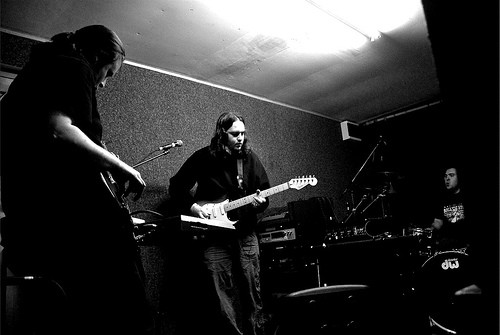
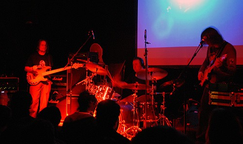
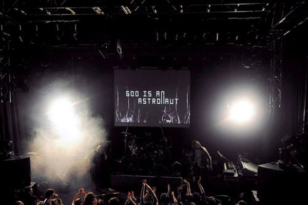

概览
God is An Astronaut
| 地区： | Ireland 爱尔兰 |
| 风格： | 后摇 Post-Rock |

档案
如果将爱尔兰比作大西洋上的绿宝石，而将它的首都都柏林看成是绿宝石中一抹黝黑的点缀，那么要用什么样的词语来形容来自此处的God Is An Astronaut呢？是那抹黝黑中一滴晶莹的泪珠，还是沙子筑成的细腻的心？然而这些词语渐渐趋于普通泛滥，又怎能将那些细节描述清楚。就像寻觅多时的一壶好酒，除去畅饮之后的唏嘘，别无它法。

God Is An Astronaut这个名字始终让人充满幻想，它带着无法忽视的光芒，是从什么地方而来？又是何时来到人们身旁，究竟是在真实又神秘的早晨，还是在可怕而缓慢的黄昏？
相信很多人都不会忘记他们的第二张专集《All Is Violent All Is Bright》，既有猛烈狂暴的瞬间，也有清晰自然的桥段。God Is An Astronaut缔造的雪世界会将卑微的脚印掩埋，那儿还有数不清的雪花，每一片都记载着不可磨灭的过去，打磨着日益麻木的神经。在音符的微弱变化中，潜伏在深处的敏锐和夜晚带来的孤寂，它们都会被褪去脆弱的外衣。
如今这支由两兄弟Niels、Torsten还有他们的朋友Lloyd组成的乐队推出了他们的第三张专集《Far From Refuge》，延续了一贯的Dream、Ambient、Space Rock、Math Rock等风格，保留了先前的恢宏大气之感，弱化了其中的电子成分，使得以往的空灵飘渺相对减少，饱满的膨胀感也不如之前。这可能会他们的不少歌迷感到失望，但仔细听下来，God Is An Astronau在过去那种浑然一体的氛围基础上，而是朝着更加内敛、细腻的方向前进，依然拥有让人值得称叹的激烈炽热，也有引领人们的温暖冷静。

“Beyond The Dying Light”，超越死光的开场曲。有着稀疏的平静音符，随之风云突变，在聚集的光彩中发出了一声叫喊，或一道粉碎界限的刀影。在一起一落中，纷杂的吉他和悠扬的合成器又上演了一幕怀疑和自我怀疑。第二首“Darkfall”则要混沌得多，在略显压抑的情绪中，几声低沉的钢琴抠开了这封闭的情绪缝隙，却并不打算冲破，而是顾自沉溺在即将到来的黑暗道路上。接下来的“Far From Refuge”长达6分51秒，全曲继承了上张的惊艳，在后段突然爆发，却来得要晦涩曲折，甚至出现了粗糙的沙砾感。第四首“Grace Descending”算是上一首的延续，优美旋律所带来的如同烟花，都在最美丽的时刻爆裂开来，一浪高过一浪的爆发，最终消失在夜空中，也为这样华美而伤感的景色划上了休止符。而用于过渡的“Lateral Noise”仅仅只有1分52秒，而且充满了杂质，一闪即逝。若不仔细听，会让人认为这不是God Is An Astronaut的作品。第六首“New Years End”充满了逐渐高昂的情绪，干净的音色，以及在岁末那头你才能看见的醒悟和展望。至于“Radau”，开始出现的诡异音色令人惊奇，紧接着这诡异就被顿起的节奏颠覆了，它在中段出现的短暂休息，则是为了下一回合的高潮做更好的准备。“Sunrise In Aries”和“Tempus Horizon”仍旧在动静中寻求最佳的平衡点，那数以千计的跌荡起伏，它们终究会落到最初的水平线上。当你走过，门纷纷关上，那身后纷纷扰扰的声音便安静了，在另一个国度记录着历史，那不再归来的、众多的、精美的事物，可以变成化石，能够凝为琥珀，去默默承载，去赋予希望。